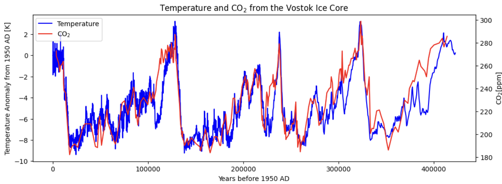
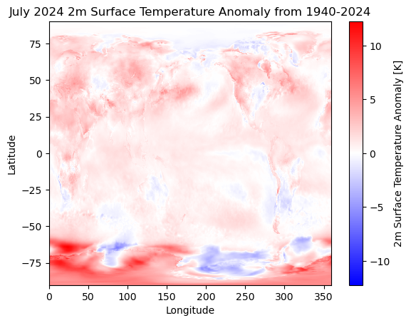
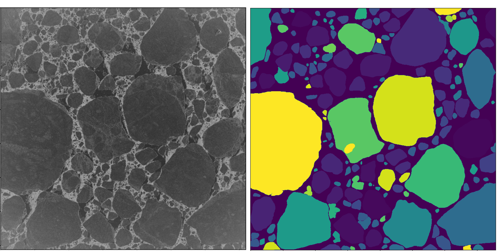
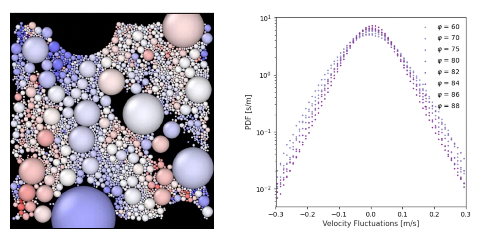

I focus on building confidence through intuition-first explanations and hands-on
work. I especially enjoy teaching climate science through computation: students
learn the physics, then can test ideas by writing code and making
figures.
Climate Change: Projections and Uncertainty
Stanford Summer Precollegiate Institute · two-week online course ·
international high school students · project-based
Beginning with an introduction to past and present climate change, this course
delves into the radiative physics underlying the greenhouse effect. Students code
their own model of Earth’s energy balance in Python to demonstrate how
greenhouse gases raise Earth’s equilibrium temperature. Armed with the
physical intuition for anthropogenic climate change, we discuss the more complex
models composing the Coupled Model Intercomparison Project (CMIP) that are used
to inform the IPCC reports. Working in teams, students read research papers to
create a final presentation on how the signal of climate change manifests itself
in a particular component of the Earth system. By the end of the course, students
feel confident in their ability to discuss the science, nuance, and uncertainty
associated with Earth’s changing climate.
Energy balance model output: temperature, radiative forcing, and CO2.

Student analysis showing 400,000 years of temperature and CO2
proxy data from the Vostok ice core. Credit: Sufee Kathane.

Student analysis using ERA5 2 m temperature data to plot the 2024 global
surface temperature anomaly.
Student feedback
Thank you so much for your support, guidance, and positive energy throughout the
course. Your encouragement made the learning environment both inspiring and
welcoming. The fact that you were always ready to help and listen —
approachable and thoughtful — made the learning process much more
comfortable and enjoyable for us. This experience wouldn’t have been the
same without you.
…I really enjoyed the fact that I was comfortable to express my knowledge
gaps to you and the fact that your answers really helped me understand better the
topics. Also, your presentations were well prepared and I was amazed of how easy
some topics can be explained. I will really miss you and this wonderful
community…
…It is definitely the summer period to remember. It was hard, but I really
enjoyed being surrounded by so many scientifically related people, so it pushed
me to do my best. I learnt a bunch of things, and maybe it will take some time to
put everything in my head, but this knowledge is extremely valuable.
Undergraduate research mentoring
I have mentored summer undergraduate research through Stanford’s
Sustainability, Engineering and Science Undergraduate Research (SESUR) program.
Some of the projects I have advised:
Machine-learning segmentation of sea ice floes from synthetic aperture radar imagery
Chloe Cheng · Summer 2023

Observing the influence of storms on the sea ice floe size distribution is
difficult with optical imagery, because clouds obscure the ice and polar night
limits the observation window. Synthetic aperture radar (SAR) sees through
clouds and does not rely on solar radiation, which makes it useful for directly
observing the influence of winter storms on sea ice. But SAR images show surface
roughness and contain non-Gaussian speckle noise, which renders traditional
segmentation methods unusable. Chloe developed an algorithm utilizing
Meta’s pretrained Segment Anything Model to retrieve the sea ice floe size
distribution from SAR imagery.
Sea ice variability in the Southern Ocean
Allie Skalnik · Summer 2024
Sea ice dispersion in a discrete element model
Ella Walsh · Summer 2025

Sea ice is a discrete medium: in winter it deforms along slip lines called
linear kinematic features, and in summer it consists of an assembly of
power-law sized floes that exchange momentum with one another via fracturing.
Velocity fluctuations for sea ice in both winter and summer follow an
exponential distribution, rather than the Gaussian expected for fully developed
turbulence in the ocean (Rampal et al., 2009). Recent work has shown that these
heavy-tailed velocity fluctuations can arise from collisions of a dense assembly
of particles under a turbulent atmosphere (Shaddy et al., 2025). Ella reproduced
this result using our sea ice discrete element model in LAMMPS and investigated
the potential for large-scale fracturing to give rise to exponential velocity
fluctuations.